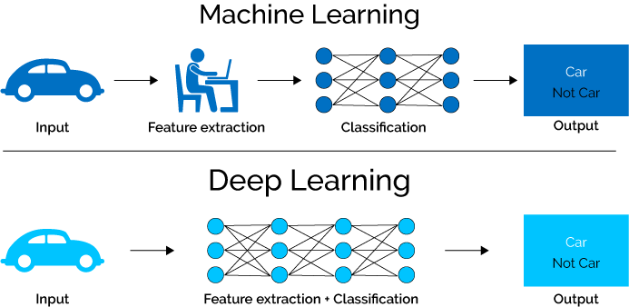

Introduction
Contents/Learning
- Introduction/Setup 30 Mins
- Image classification (source) 45 Mins
- Transfer learning and fine-tuning (source) 50 Mins
- Slurm jobs on NeSI GPUs 30 Mins
Keywords
Machine Learning, Neural Networks, Perceptrons, Multi Layer Perceptrons, Convolutional Neural Networks, Weights, Back Propogation, Gradient Descent
Workshop Notes
The workshop Notebooks come from the TensorFlow Tutorials. TensorFlow and Keras provide great tools for building ML skills, particularly in the area of image analysis. It’s Python Based, opensource, lots of worked examples in the tutorials and generally provides a good balance between getting going and being able to build some useful models.
PyTorch also has a set of Tutorials is slightly more Python heavy in its code base, but essentially provides the same ability to rapidly build ML models and BOTH are supported on the REANNZ Platform.
Maths - we are going to stay maths light, entire university papers are devoted to Machine Learning algorithms.
What is Deep Learning?
Deep learning is a subset of machine learning. In it’s simplest form it’s a neural network with three or more layers, and we can think of each layer as a Perceptron (below). As a network these attempt to simulate the behavior of the human brain, allowing it to “learn” from large amounts of data.
CNNs (Convolutional Neural Networks) that we are going to be using, are regularized versions of multilayer perceptrons, which usually means a fully connected network. ie each neuron in one layer, is connected to all neurons in the next layer. Which can be computationally expensive and also prone to over fitting. CNNs though, are not fully connected and take advantage of the hierarchical nature of data to assemble patterns of complexity using smaller and simpler patterns embedded in their layers. Layers and Nodes can be used to find features of interest. Compared to standard linear regression where we can do significance tests, and know which parts of a model are significant, CNNs are more of a black box, where we we don’t necessarily know what each layer/node is doing. Therefore, on a scale of connectivity and complexity, CNNs are on the lower extreme.

Source: www.towardsdatascience.com
The Perceptron
The base of CNNs though is the concept of the Perceptron and Frank Rosenblatt’s (Cornell) 1958 paper where he used inputs and weights and comparision to eye/brain function
The perceptron: a probabilistic model for information storage and organization in the brain F ROSENBLATT PMID: 13602029 DOI: 10.1037/h0042519
Minskey and Papert (1969) also comes up in literature with this model of the perceptron and some explantory maths.

f(x)= \[\begin{cases} 1 \text{ if } w.x > 0,\\\\ 0, \text{otherwise} \end{cases}\]
$ where the dot product of \(w.x\) is \(\sum \limits _{i=1} ^{m} w_{i}x_{i}\), it’s also common to add a bias (b) to the dot product, which has the effect of shifting the line or classification boundary.
Convolutional Neural Networks (CNNs)
Convolutional networks were inspired by biological processes in that the connectivity pattern between neurons resembles the organization of the animal visual cortex. Individual cortical neurons respond to stimuli only in a restricted region of the visual field known as the receptive field. The receptive fields of different neurons partially overlap such that they cover the entire visual field.
CNNs use relatively little pre-processing compared to other image classification algorithms. This means that the network learns to optimize the filters (or kernels) through automated learning, whereas in traditional algorithms these filters are hand-engineered. eg significance testing in linear models. They have become particular useful in applications for image and & video recognition. Their relative simplicity and computational power in recent years has seen the use of CNNs explode.

Source: www.towardsdatascience.com
There are three types of layers in Convolutional Neural Networks:
Convolutional Layer: In a typical neural network each input neuron is connected to the next hidden layer. In a CNN, only a small region of the input layer neurons connect to the neuron hidden layer.
Pooling Layer: The pooling layer is used to reduce the dimensionality of the feature map. There will be multiple activation & pooling layers inside the hidden layer of the CNN.
Fully-Connected layer: Fully Connected Layers form the last few layers in the network. The input to the fully connected layer is the output from the final Pooling or Convolutional Layer, which is flattened and then fed into the fully connected layer.
Next notebook: Image classification